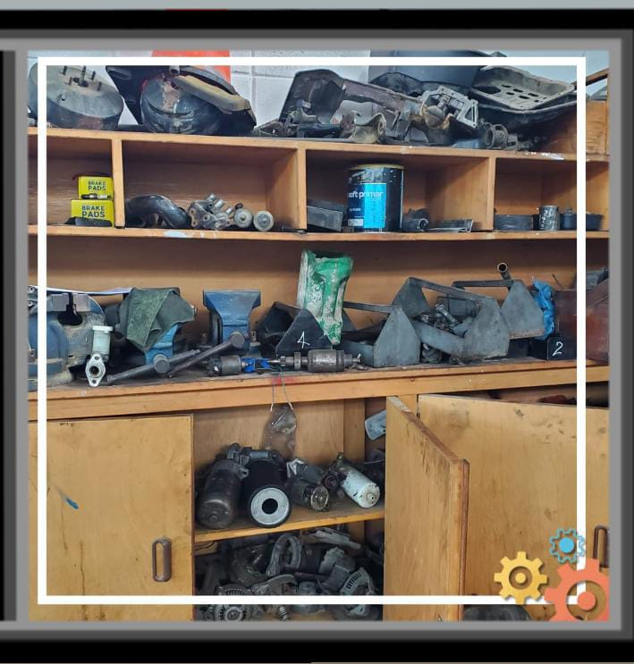
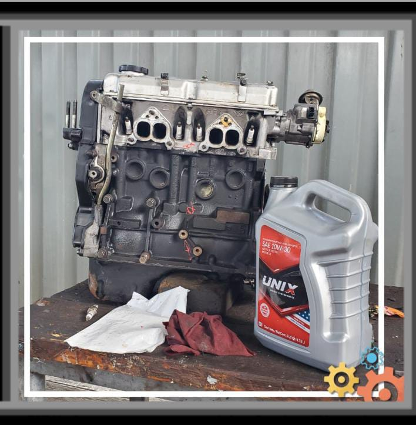

Sobre la Carrera
¿Que es el BTPMA?
El Bachillerato Tecnico en Mecanica Automotriz (BTPMA) es un programa educativo de nivel medio-superior que combina la formación académica con la capacitación técnica en el campo de la mecanica automotriz. Este programa esta diseñado para preparar a los estudiantes con los conocimientos y habilidades necesarias para trabajar en la industria automotriz, ya sea en talleres de reparacion, concesionarios, empresas de transporte o incluso para emprender su propio negocio relacionado con la mecanica automotriz.
La carrera de Mecanica Automotriz o Bachillerato Tecnico en Mecanica Automotriz (BTPMA) es una de las carreras disponibles en nuestro Instituto, en esta carrera el alumno podra desarrollar varias habilidades y conocimientos diversos de esta rama tan amplia, tales como el conocimiento de Sistemas Mecánicos y Electrónicos, Realizacion de Diagnosticos, Interpretacion de Manuales y Manejo de Herramientas

El Bachillerato Tecnico en Mecanica Automotriz (BTPMA) tiene como objetivo formar profesionales capacitados para diagnosticar, reparar y mantener vehículos automotores, utilizando tecnologías modernas y prácticas de trabajo seguras. Los estudiantes adquieren conocimientos en áreas como motores, sistemas eléctricos, transmisión, frenos, suspensión y electrónica automotriz.

¿Por que elegir esta carrera?
-
Alta Demanda Laboral
La industria automotriz esta en constante crecimiento, lo que genera una alta demanda de tecnicos especializados en mecanica automotriz.
-
Variedad de Oportunidades
Los egresados pueden trabajar en talleres mecanicos, concesionarios, empresas de transporte, o incluso iniciar su propio negocio.
-
Desarrollo de Habilidades Tecnicas
La carrera ofrece una formacion integral que combina conocimientos teoricos con habilidades practicas, preparando a los estudiantes para enfrentar desafios reales en el campo laboral.
-
Contribucion a la Sociedad
Los tecnicos en mecanica automotriz juegan un papel crucial en la seguridad vial y el mantenimiento de los vehiculos, contribuyendo al bienestar de la comunidad.